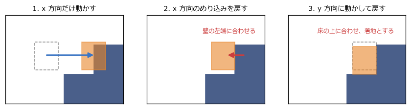
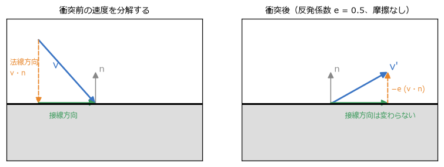
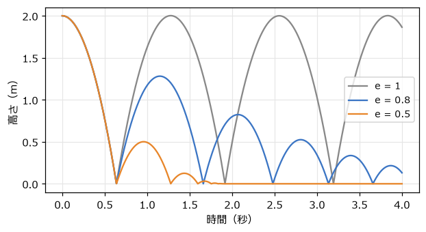
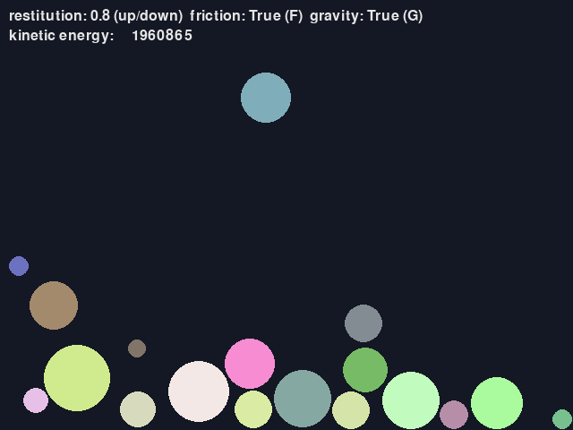

12. 衝突応答
前の章の衝突判定で、物どうしが重なっていることと、その法線・めり込みの深さが分かった。この章では、その情報を使って物を押し戻し、跳ね返らせる衝突応答を扱う。
12.1. めり込みの解消
ゲームでは時間を区切って物を動かすので、衝突が見つかった時点では、物はすでに少しめり込んでいることが多い。まず、めり込みを解消するように位置を直す。
動かない壁との衝突なら、動く物だけを法線の向きにめり込みの深さだけ動かせばよい。両方が動く物の場合は、質量に応じて押し分ける。軽い物ほど大きく動き、重い物はあまり動かない。具体的には、質量の逆数の比で配分する。
ここで \(\mathbf{n}\) は A から B へ向かう法線、\(d\) はめり込みの深さである。物理の計算では、質量 \(m\) そのものより、その逆数 \(1/m\) を持っておくと便利である。動かない物（壁や地面）は「質量が無限大」とみなし、質量の逆数を 0 にすれば、同じ式で扱えるからである。
12.1.1. 軸ごとに解決する方法
タイルマップの 2D アクションゲームでは、キャラクターを x 方向と y 方向に分けて動かし、それぞれの後で押し戻す方法がよく使われる（図 12.1）。
x 方向にだけ動かす。壁のタイルと重なったら、動いていた向きに応じて、壁の左端か右端にキャラクターの端をそろえる。
y 方向にだけ動かす。重なったら、床の上端か天井の下端にそろえる。下向きに動いていて床にそろえた場合は「着地した」とする。

図 12.1 x 方向と y 方向に分けて動かし、それぞれ押し戻す
軸を分けると、どちらの向きに押し戻せばよいかが「その軸で動いていた向き」から決まるので、角に斜めから突っ込んだときにも迷わない。床の上を歩くときに床のタイルの継ぎ目に引っかかる、といった問題も起きにくい。第 15 章の総合演習の move_and_collide 関数は、この方法で実装している。
12.2. 速度の法線方向と接線方向への分解
位置を直しただけでは、物は次のステップでまたぶつかってしまう。速度も直す必要がある。第 4 章の反射ベクトルと同じく、相手に対する速度（相対速度）を、法線方向の成分と接線方向の成分に分けて考える（図 12.2）。
\(v_n < 0\) なら、2 つの物は近づきつつある。\(v_n > 0\) なら、すでに離れつつあるので、何もしなくてよい。

図 12.2 速度の法線方向と接線方向への分解
法線方向の成分: ぶつかる向きの成分。跳ね返りでは、これが反転する。
接線方向の成分: 面に沿って滑る向きの成分。摩擦が無ければ変わらない。
12.3. 反発係数と跳ね返り
衝突の前後で、法線方向の相対速度がどれだけ残るかを表すのが反発係数 \(e\) である。
\(e = 1\) なら同じ速さで跳ね返り（完全弾性衝突）、\(e = 0\) なら跳ね返らずにくっつく（完全非弾性衝突）。現実の物は 0 と 1 の間で、ゴムボールは大きく、粘土は小さい。図 12.3 は、2 m の高さから落としたボールの跳ね方である。反発係数が小さいほど早く止まる。


図 12.3 反発係数による跳ね方の違い
12.4. 運動量と力積
両方が動く物の衝突では、相手の質量によって跳ね返り方が変わる。軽いボールが重いボールにぶつかると、軽い方は大きく跳ね返り、重い方はほとんど動かない。これを正しく計算するには、運動量と力積を使う。
運動量は質量と速度の積 \(m\mathbf{v}\) である。外から力が働かなければ、衝突の前後で 2 つの物の運動量の合計は変わらない（運動量保存の法則）。これは作用・反作用の法則から導かれる。
衝突の瞬間に働く大きな力を、時間で積み重ねた量を力積と呼ぶ。衝突応答では、力積 \(\mathbf{J} = j\,\mathbf{n}\) を、B には \(+\mathbf{J}\)、A には \(-\mathbf{J}\) として与え、速度を次のように変える。
A と B に逆向きで同じ大きさの力積を与えているので、運動量の合計は保たれる。衝突後の法線方向の相対速度が \(-e\,v_n\) になるという条件から、力積の大きさ \(j\) が決まる。
リスト 12.1 は、めり込みの解消、反発、摩擦（後述）をまとめた関数である。
1def resolve_contact(a: Body, b: Body, normal: Vector2, depth: float, restitution: float, friction: float) -> None:
2 """a と b の接触を解消する。normal は a から b へ向かう単位ベクトル、depth はめり込みの深さ。"""
3 total_inv_mass = a.inv_mass + b.inv_mass
4 if total_inv_mass == 0:
5 return # どちらも動かない
6
7 # 1. めり込みの解消: 質量の逆数の比で押し分ける（軽い方が大きく動く）
8 correction = normal * (depth / total_inv_mass)
9 a.position -= correction * a.inv_mass
10 b.position += correction * b.inv_mass
11
12 # 2. 法線方向の速度を、反発係数に応じて反転させる力積
13 relative = b.velocity - a.velocity
14 normal_speed = relative.dot(normal)
15 if normal_speed > 0:
16 return # すでに離れつつある
17 j = -(1 + restitution) * normal_speed / total_inv_mass
18 a.velocity -= normal * (j * a.inv_mass)
19 b.velocity += normal * (j * b.inv_mass)
20
21 # 3. 接線方向の摩擦: ずれる速度を打ち消す力積。大きさは法線方向の力積の friction 倍まで（クーロン摩擦）
22 relative = b.velocity - a.velocity
23 tangent = relative - normal * relative.dot(normal)
24 if tangent.length_squared() < 1e-12:
25 return
26 tangent = tangent.normalize()
27 jt = -relative.dot(tangent) / total_inv_mass
28 jt = max(-friction * j, min(friction * j, jt))
29 a.velocity -= tangent * (jt * a.inv_mass)
30 b.velocity += tangent * (jt * b.inv_mass)
同じ質量の 2 つのボールが反発係数 1 で正面衝突すると、速度がそっくり入れ替わる（ビリヤードで、当てた球が止まり、当てられた球が同じ速さで進む）。test_physics.py では、このことと、衝突の前後で運動量の合計が変わらないことを確かめている。
12.5. 衝突時の摩擦
接線方向の速度、つまり面に沿って滑る速度は、摩擦によって減る。衝突応答では、接線方向にも力積を与えて、滑る速度を打ち消す。ただし、摩擦の力積の大きさには上限があり、法線方向の力積 \(j\) の \(\mu\) 倍までとする（クーロン摩擦）。\(\mu\) は摩擦係数で、氷なら小さく、ゴムなら大きい。強く押し付けられているほど、大きな摩擦が働くということである。
resolve_contact の手順 3 では、接線方向の単位ベクトル \(\mathbf{t}\) を求め、滑る速度を 0 にする力積を計算してから、\(\pm\mu j\) の範囲に収めている。
response.py は、大きさの異なるボールが箱の中でぶつかり合うデモである（図 12.4）。ボールの質量は面積に比例させている。上下キーで反発係数を、F キーで摩擦の有無を、G キーで重力の有無を切り替えられる。重力と摩擦を切って反発係数を 1 にすると、画面の上に表示される運動エネルギーの合計がほぼ一定に保たれる。


図 12.4 response.py の画面
step_world では、1 フレームを 4 回に分けて物理を進めている（サブステップ）。たくさんのボールが積み重なると、1 つの衝突を解消したことで別の衝突が生じる。細かく何度も解消を繰り返すことで、積み重なったボールが沈み込みにくくなる。
12.6. 剛体の回転の入門
ここまでは、物の回転を考えなかった。現実の物は、中心からずれた場所を押されると回り出す。変形しない物体を剛体と呼び、剛体の運動は「重心の移動」と「重心の周りの回転」に分けて扱う。回転の運動は、移動の運動と次のように対応している。
移動 |
回転 |
説明 |
|---|---|---|
位置 \(\mathbf{x}\) |
角度 \(\theta\) |
2D では角度 1 つで向きが決まる |
速度 \(\mathbf{v}\) |
角速度 \(\omega\) |
1 秒あたりに回る角度 |
質量 \(m\) |
慣性モーメント \(I\) |
回しにくさ。質量が中心から遠くに分布しているほど大きい |
力 \(\mathbf{F}\) |
トルク \(\tau = \mathbf{r} \times \mathbf{F}\) |
回そうとする働き。\(\mathbf{r}\) は重心から力が働く点へのベクトル（2D の外積） |
\(\mathbf{F} = m\,\mathbf{a}\) |
\(\tau = I\,\alpha\) |
\(\alpha\) は角加速度（角速度の変化の割合） |
慣性モーメントは、形と質量から決まる。たとえば、半径 \(r\) の円板では \(I = \frac{1}{2} m r^2\)、幅 \(w\)・高さ \(h\) の長方形の板では \(I = \frac{1}{12} m (w^2 + h^2)\) である。物理エンジンでは、形状を与えると自動で計算してくれることが多い（第 14 章）。
剛体どうしの衝突では、接触点が重心からずれているので、力積によって角速度も変わる。接触点の速度は「重心の速度」と「回転による速度 \(\omega \times \mathbf{r}\)」の和になり、力積の大きさの式の分母には、回転のしにくさを表す項が加わる。
\(\mathbf{r}_A\)、\(\mathbf{r}_B\) は、それぞれの重心から接触点へのベクトルである。\(\Delta\omega_A\) は、力積の向きが逆になるだけで同じ形の式になる。ここまでの考え方が分かれば十分で、実際のゲームで回転する剛体を大量に扱うなら、物理エンジンを使う方がよい。複数の接触点を同時に安定して解く、静止した物を眠らせて計算を省く、といった工夫が必要になるからである。次の 2 つの章で、ばねや拘束の仕組みと、物理エンジンの使い方を見ていく。